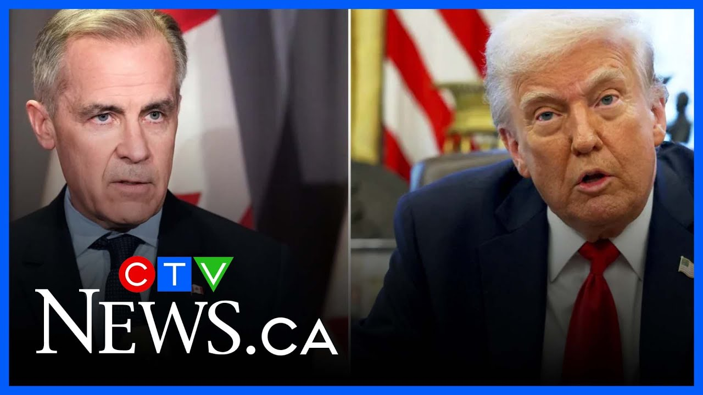

来B站一起耍【Global每日英语简报】
【卡尼总理即将访问白宫：特朗普】
Summary: We're learning limited details about PM Carney's upcoming meeting with Trump, which is highly anticipated but not yet confirmed in timing or location. Trump hinted at it happening soon, and they've previously discussed a new trade deal post-Canadian election. The meeting's tone and visuals will be closely watched, especially regarding tariff impacts and potential trade negotiations. Meanwhile, questions remain about Pierre Poilievre's future as Conservative leader after losing his seat, including his role in the House of Commons and official opposition status.
摘要： 我们了解到关于卡尼总理与特朗普即将举行的会晤细节有限，这场备受期待的会面时间和地点尚未确认。特朗普暗示会晤将很快举行，他们此前曾讨论过加拿大选举后的新贸易协议。会议的基调和视觉效果将受到密切关注，尤其是关于关税影响和潜在贸易谈判。与此同时，皮埃尔·波利耶夫在失去席位后作为保守党领袖的未来仍存疑问，包括他在众议院的角色和官方反对党地位。

⏱️ Estimated Reading Time: 8 min
Good morning, Jeremy.
早上好，杰里米。
What more are we learning and watching for from this meeting?
关于这次会晤，我们还在了解什么以及关注什么？
Yeah, good morning, Renee.
是的，早上好，蕾妮。
Look, uh details are still limited.
看，呃，细节仍然有限。
The prime minister's office not confirming, you know, when this meeting will happen, exactly where it's going to happen.
总理办公室尚未确认，你知道，这次会晤何时举行，具体在哪里举行。
What we've seen uh with Trump in in recent meeting with other world leaders is kind of that infamous now almost, you know, Oval Office sitdown.
我们在特朗普最近与其他世界领导人的会晤中看到的，几乎是现在众所周知的那种著名的椭圆形办公室会面。
He did it with Kier Starmer.
他与基尔·斯塔默这样做过。
He did it with Vladimir Zalinski.
他与弗拉基米尔·泽连斯基这样做过。
It's not clear if that'll be the exact same thing we'll see with Prime Minister Mark Carney.
目前尚不清楚我们是否会看到与马克·卡尼总理完全相同的场景。
Uh what we do know is the two have talked and are planning to meet uh you know sooner than later.
呃，我们所知道的是，两人已经交谈并计划尽快会面。
Donald Trump alluded yesterday to that happening um you know in the next week or so.
唐纳德·特朗普昨天暗示，呃，你知道，会晤将在下周左右举行。
Uh again Mark Carney Mark Carney's team hasn't confirmed Prime Minister Mark Carney's team hasn't confirmed a timeline but this will be you know a highly important meeting and is a highly anticipated meeting.
呃，再次，马克·卡尼的团队尚未确认时间表，但你知道这将是一次非常重要且备受期待的会晤。
We know that even during a phone call in March when the two spoke they had talked about uh meeting following the the uh Canada's election and and after uh afterwards talking about uh you know a new trade deal.
我们知道，甚至在3月份的一次电话交谈中，两人就提到在加拿大选举后会晤，之后讨论，呃，你知道，一项新的贸易协议。
That is the big thing here as well is that the two have already started conversations about a new Canada US Mexico agreement uh KSMA as we know it here of course in Canada.
这里的重要一点是，两人已经开始讨论新的加拿大-美国-墨西哥协议，呃，在加拿大我们称之为KSMA。
And so it would appear that both sides are already willing to have a conversation and talk about that and everyone will be watching closely about the tone of this meeting.
因此，似乎双方已经愿意进行对话并讨论此事，所有人都将密切关注这次会晤的基调。
Uh you know uh visually what it looks like.
呃，你知道，呃，视觉上看起来如何。
Um this will be kind of uh an all eyes on the White House uh kind of day when the two meet face to face as you know um this was a pivotal uh you know focus point for this election.
嗯，这将是那种，呃，万众瞩目白宫的日子，当两人面对面会晤时，你知道，呃，这是选举的一个关键焦点。
How would the candidate in this case, successful candidate was Prime Minister Mark Carney, handle Donald Trump in these meetings, in these negotiations?
在这种情况下，成功的候选人马克·卡尼总理将如何在会晤和谈判中应对唐纳德·特朗普？
Of course, we are still facing the threat of tariffs, some tariffs already in effect impacting some uh industries here in Canada.
当然，我们仍面临关税威胁，一些已生效的关税正在影响加拿大的一些行业。
And so, how quickly can Mark Carney start the conversation, perhaps get a new trade deal, uh, you know, underway or negotiations underway for a new trade deal with Donald Trump that could hopefully benefit Canadians when it comes to the impact of these tariffs.
因此，马克·卡尼能多快开始对话，或许推动一项新贸易协议，呃，你知道，与唐纳德·特朗普展开新贸易协议的谈判，希望能在关税影响方面使加拿大人受益。
So, a lot on the line here.
所以，这里有很多利害关系。
Um, this will be a highly anticipated and highly important meeting.
嗯，这将是一次备受期待且非常重要的会晤。
Renee, I can imagine a lot of people uh will be watching that with baited breath.
蕾妮，我能想象很多人会屏息以待。
to Jeremy.
杰里米。
Uh now, uh also a lot of talk about Polygav, especially there where you are in Ottawa.
呃，现在，呃，也有很多关于波利耶夫的讨论，尤其是在你所在的渥太华。
Uh and what's next for him after he lost his seat, Jeremy?
呃，他在失去席位后下一步会怎样，杰里米？
Yeah, a lot of big question marks when it comes to Pierre Paul and what comes next for the Conservative party.
是的，关于皮埃尔·波利耶夫和保守党的未来有很多大问号。
Uh look, uh we've heard from some conservatives who are uh you know, steadfast that he will be the leader moving forward for the party.
呃，看，呃，我们听到一些保守党人士，你知道，坚定认为他将继续担任党的领袖。
Uh that he deserves to remain as the party leader.
呃，他理应继续担任党的领袖。
Um and you know we've also heard uh from some sources that you know he is calling uh grassroots members shoring up support gauging how people are feeling trying to determine his next move.
嗯，你知道，我们也从一些消息来源听说，你知道他正在联系基层成员，巩固支持，评估人们的感受，试图决定他的下一步行动。
Certainly in his in his speech um it was not the speech of someone post-election speech I'm talking about here.
当然，在他的演讲中，嗯，这不是我说的那种选举后的演讲。
It was not the speech of someone who um seems to intend to step down as party leader.
这不是那种似乎打算辞去党领袖职务的人的演讲。
There are also big questions about what happens in the House of Commons uh once parliament resumes once um the next parliamentary sitting starts because of course having lost his own writing Pierre Polyv uh will not have a seat in the House of Commons.
还有一个大问题是，一旦议会复会，呃，下一次议会会议开始时，众议院会发生什么，因为当然，皮埃尔·波利耶夫失去了自己的选区，呃，将不会在众议院拥有席位。
He can remain uh the leader of the Conservative Party.
他可以继续担任保守党的领袖。
That's no problem.
这没问题。
Uh but he will not be able to maintain his role as office uh official opposition leader or official opposition leader in the House of Commons without a seat in the House of Commons.
呃，但没有众议院席位，他将无法保持众议院官方反对党领袖的角色。
That means a number of things.
这意味着很多事情。
There are questions swirling here in Ottawa about Storway Pier Polyv's residence which is the residence of the leader of the official opposition.
在渥太华，关于斯托威·皮埃尔·波利耶夫的住所（官方反对党领袖的住所）有很多疑问。
Um that is a parliamentary role which means you have to have a seat in parliament to be able to hold that role.
嗯，这是一个议会职位，意味着你必须在议会拥有席位才能担任该职位。
There are questions about what happens with that residence whether or not he can stay there um without being able to serve as the official leader of the opposition at least as it stands.
关于那个住所会发生什么有疑问，至少目前来看，他是否能在无法担任官方反对党领袖的情况下继续住在那里。
Of course, we could see a situation where there's a bi-election, he takes over a seat, and then all is well, he'll have a seat again and could remain.
当然，我们可能会看到一种情况，即举行补选，他获得一个席位，然后一切顺利，他将再次拥有席位并可以继续担任。
Uh, but until that happens, the Conservative Party will have to uh appoint someone else as the official leader of the opposition party in the House of Commons at least, while Polyv would remain leader of the Conservative Party.
呃，但在那之前，保守党将不得不任命其他人担任众议院官方反对党领袖，至少波利耶夫将继续担任保守党领袖。
There are a lot of different situations that could play out here, a lot of questions swirling.
这里可能有很多不同的情况发生，很多疑问盘旋。
Uh, it is not clear yet what will happen next for Pierre Polyv and the Conservative Party.
呃，目前尚不清楚皮埃尔·波利耶夫和保守党的下一步会怎样。
Renee, that is very interesting.
蕾妮，这非常有趣。
Uh, CTV's Jeremy Cheron reporting for us from Ottawa.
呃，CTV的杰里米·切伦从渥太华为我们报道。